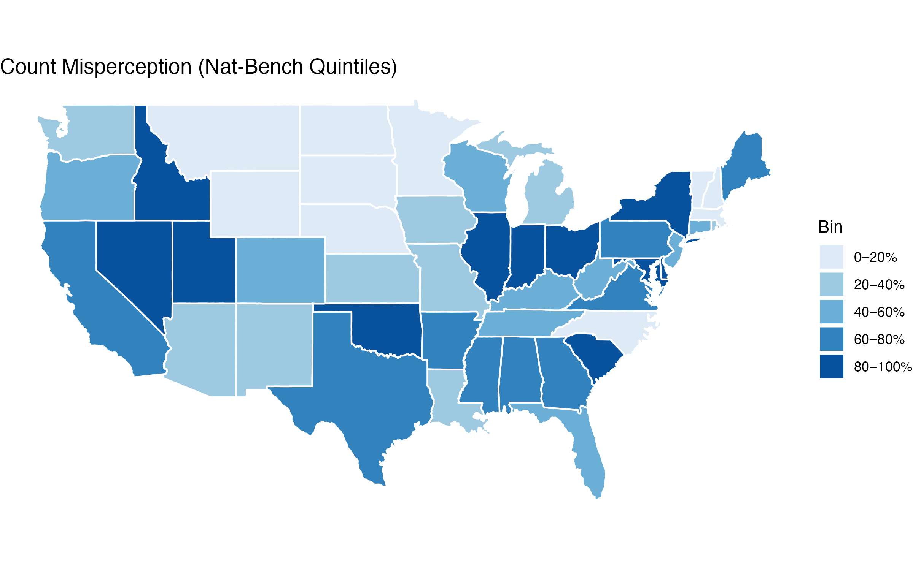
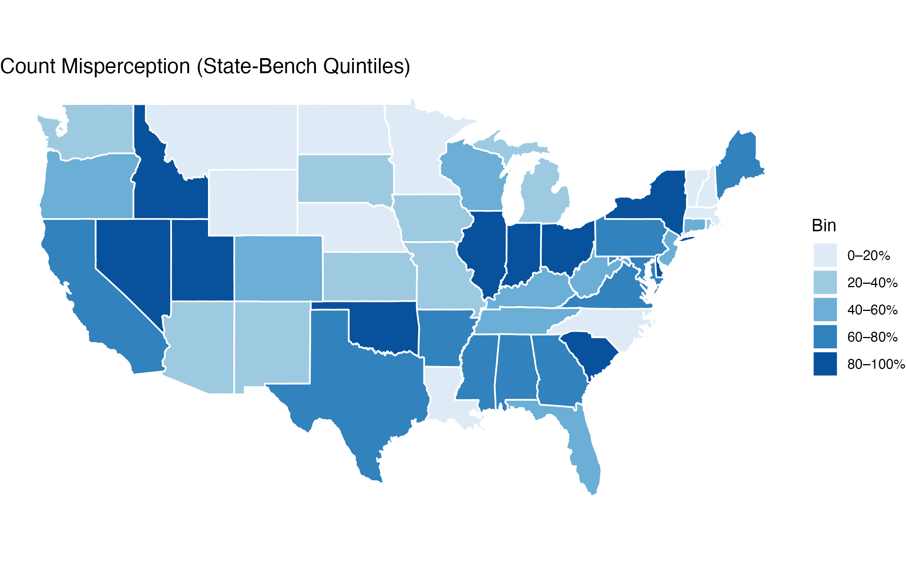
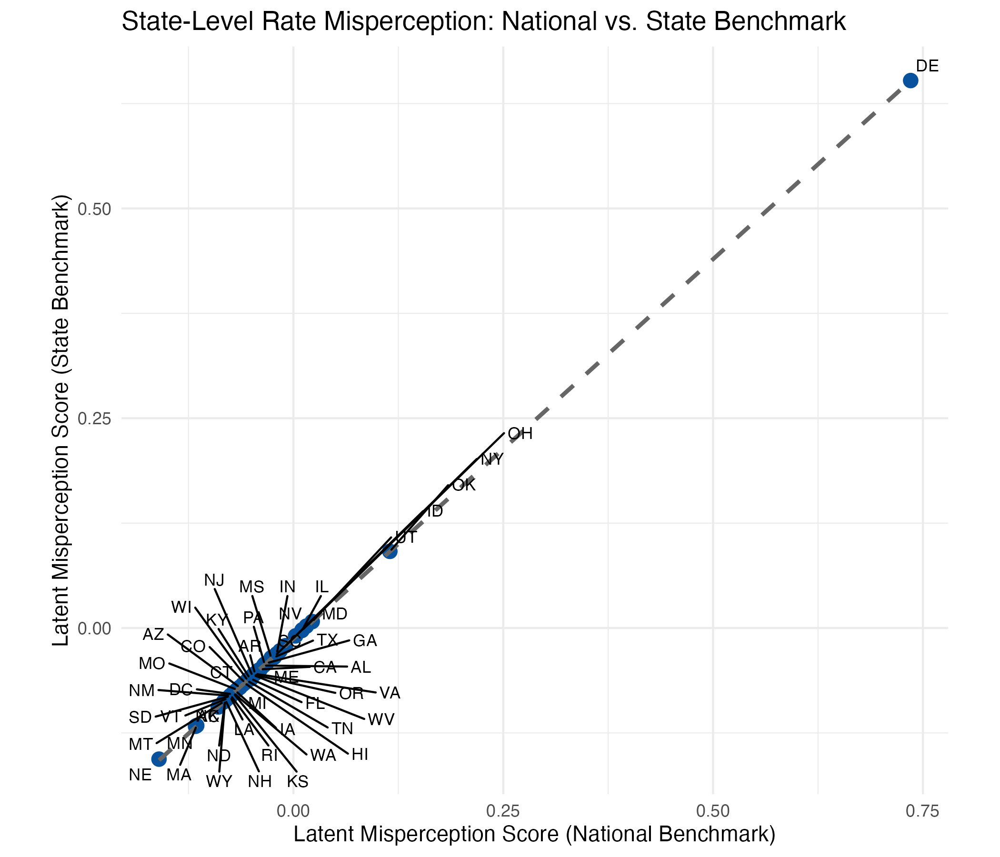

Author:
Based on data from a May 2025 nationally representative survey experiment.
In May 2025, I fielded a nationally representative survey asking Americans to estimate the scale and racial disparities of police use of force in the United States. Specifically, respondents were asked:
Each respondent also provided geographic data, which allowed me to map responses to both national and state-level benchmarks on fatal police shootings (based on a decade’s worth of Washington Post data) as well as national estimates of use-of-force frequency from BJS data.1
Based on past work, we know respondents are likely wrong on all four questions. But rather than treat each answer as a standalone error, I used factor analysis to identify underlying dimensions of misperception.
Using exploratory and confirmatory factor analysis, I extracted two consistent patterns from the gaps between perception and reality:
These factors allow us to compare misperceptions across geography—even if the benchmark data are imperfect (as we know they are). If official sources underreport or systematically bias use-of-force rates, these latent scores still capture relative over- or underestimation at the individual and state level.
Before looking at geography, how far off are people on average?

This map shows each state’s level of misperception by quintile using national benchmarks—meaning states are grouped into five equal-sized bins based on their average misperception score, from the least misinformed (lightest shade) to the most misinformed (darkest shade).3
The quintile classification helps highlight regional patterns in public beliefs, showing where respondents tend to most dramatically overestimate police use of force.

When we anchor responses to local (state-level) benchmarks instead of national averages, the geographic pattern of misperception remains stable. State-level misperception scores derived from national benchmarks are strongly correlated with those derived from state-specific benchmarks, indicating a consistent geographic pattern regardless of the reference point.

Public opinion about policing is often shaped by high-profile, nationally visible events. But most people interact with local police, not a national aggregate.
If misperceptions are fueling distrust, driving specific reforms, or shaping media narratives, it’s critical to understand:
These findings raise important questions for future research. While misperceptions about police use of force are widespread, we still know little about what shapes these beliefs. Future work should explore:
Addressing these questions is essential to developing evidence-based strategies for fostering constructive dialogue about policing in America.
Citation: Mourtgos, S. M. (2025). Mapping Public Misperceptions of Police Use of Force. Link
The fatal police shootings data used in this analysis come from the Washington Post’s Police Shootings Database (2015–2024). While no single dataset on police use of force in the U.S. is comprehensive or free from limitations—including this one—it provides a sufficiently consistent and well-documented benchmark for estimating relative misperceptions across states. Estimates for non-lethal use of force are drawn from the Bureau of Justice Statistics (BJS), which suggests that approximately 1.5% of all police-public interactions involve force. To be conservative—and to ensure that overestimation patterns aren’t artificially inflated—I use 2% as the benchmark for force estimates. This figure, however, is based entirely on self-report survey data, and unlike the other three measures (fatal gunfire, racial disparity, and unarmed deaths), there is no state-level benchmark available. As such, the use-of-force comparison is necessarily anchored to a national estimate. This analysis does not depend on the accuracy of any single number. Instead, it focuses on the discrepancy between public perceptions and benchmarked figures, which provides an adequate approach, even if the underlying data contain some degree of error or underreporting.↩︎
I z-scored all four measures and estimated the same EFA and CFA models. The results were consistent even when all four measures were placed on the same scale.↩︎
Each state’s misperception score across the two factors is highly correlated, so only one is shown here.↩︎